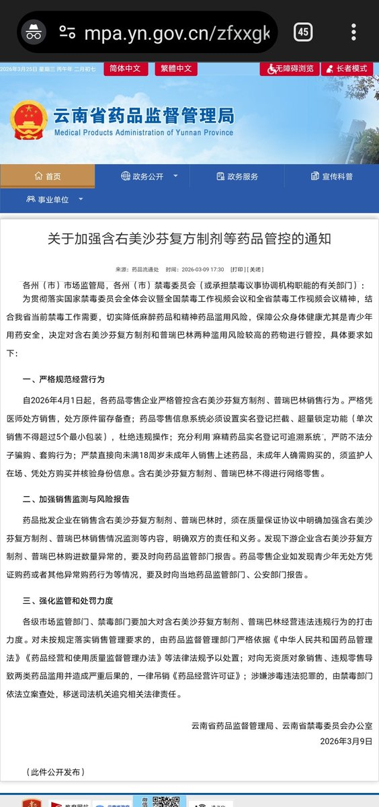

🍀🍥竹蜻蜓🍥🍀
@zqtlovekris99
@SalviaSWC 你也不看看這原推是誰，有流量炒管你真的假的

鼠尾草～🌿（中推OD党版）
@SalviaSWC
求求你们看看公告原文吧：https://t.co/NROnxu6vDm
看清楚了，该通知的对象是“各州（市）市场监管局，各州（市）禁毒委员会”；以及“全省”、“我省”等字眼，显然是只影响云南省内的文件。
提高信息鉴别能力，让谣言止于智者。说话有分量的人也应负起责任，知道自己的言行会有何影响，请勿“德不配位”😅 https://t.co/FbGigKeL51 https://t.co/0viHYuBMc2